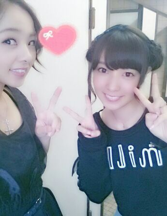

| 2013/10 13 Sun | 川村真洋 皆の秋っぽいことといえば〜♪( ｏ・ω・)ノ))？しちゅも ん返しだお。(/ω＼*) ろ っちー. |
おはよー--う (/*´∀`)/
ろってぃ-だよ-ん.
昨日は乃木ここのロケでした.
初めて体験することもあって
楽しかったでしゅ.
高速道路が渋滞してたお....
皆、三連休 お出かけしてんだね♪
いいこっちゃ (・ω・)！
昨日の夜、 質問返しうちながら寝落ち
しちゃってたよぉ。
久しぶりに 夜にぐっすり眠れたぁぁ.
気持ちぃぃ.
そんなこんなで 今日も朝ご飯は
しっっかり 食べた ろってぃ-です＼(^o^)／
ー*ー*ー*ー*ー*ー*ー*ー*ー*ー*ー*ー*
☆OFFの日は何やってんの〜？
★まったり１人カフェしてるよ〜
(*´ω`) お買い物やお散歩 カラオケとかかな〜. メンバーと共に過ごしたりね〜
本当に疲れてる時は 1日中すやすや...zZ(ω)oO
☆イカ焼き東京と大阪ではどう違うの？★全然違うよ〜 調べてみてよんよん.
乃木曲で『ロマンティックイカ焼き』
ってあるじゃん？最初 まひろだけ皆と思い込んでるイカ焼きがちゃうかった(*^^*)あは.
☆ろってぃ-特製お好み焼きはおいちーのかな？
★絶対に おいちーおいちーおいちー
(*´ω｀*) ボリューム満天 ))) 豚肉ジューシーキャベツはシャキシャキ
マヨソースはスタンダードなやちゅ.
もうこれはこれは最高さ。ぁ
☆イカ焼き食べたいんやけど特別ろってぃ-担当してくれへん？
★しゃあないな- 特別にな〜(*´ω｀*)笑
☆今日からRotty夢に入りたいんやけど
条件とかあるの？
★条件は Rottyのことを好きであるかどうか. それだけだよ(/-＼*)
Rotty夢へようこしょ.
☆今年 入試で来年の春先まで応援に行ったりできんけど大丈夫？
★そっかそっか〜
そしたら今 すごく大変なんやね〜
がむばって がむばって 大丈夫だよ^^
ろってぃ-はずっと応援してるからね
☆ろってぃ-は秋冬それぞれ男性のファッションはどんなのが好き？
★まひろ 男性のニットも好きだよ〜
ニット帽大好きだけどなぁ〜
あと、ロングコートでオシャレしてるの好きだよー^^
ロングコートに帽子かぶってる
おじいちゃんが好き。
☆ろってぃ-は洋菓子と和菓子どっちが好きですか？
★両方だいすきっ ! !
どっちかしか 食べれないってゆ-なら
ろってぃ-は 和菓子(/ω＼*)
☆ライブで、ろってぃ-タオル見えたかな？
★ろってぃ-タオルめっちゃ見えたよ〜う. 皆ありがと〜う. 見つけるたびにろってぃ-は とってもとっても 嬉しゅうキモチになったよ. 皆大好き.
☆ライブ、アリーナから私なりに『ろってぃ--』って叫びました。聞こえたかな？
★皆からの声援はちゃんとろってぃ-に伝わってたよ^^ ろってぃ-って叫んでる声も聞こえたしねん。 ありがと。
☆ろってぃさんの黒髪がまた見たいんですけど どうでしょうか？
★黒にしたいって思ってるんやけど
ろってぃ-すぐに茶色くなっちゃうの...
悲しゅう。
待って...でもその内また黒に染めるかもしれん(*´ω｀*)
☆日本武道館では『Sasuke』が聴きたい。えっと あれは Rottyの歌だから無理かなあ？
★いつか、そうゆう場で 『Sasuke』を歌う... Sasukeのミュージックビデオを作るのが夢なの。天国にいるサスケにもう1度うたうの。
☆ろってぃ-的にライブ中一番テンション上がった瞬間は？
★ずっとだよ! 花道ダッシュした時もキモチかったなん^^
☆東京はまだ暑いですか？
★あっちゅいあっちゅい〜。
急に寒くなるのかなあ？
☆武道館の発表があった時のろってぃ-の気持ち、頭には何が浮かんのかな？
★リアルにびっくりでれいかに思わず抱きついた 笑
信じられないw! ww 。フォー やばばー ってキモチだったよん♪
しちゅもん返し以上だお〜***
仲良したん ゆったんたん(*ノ3ノ)

今は握手会中かなぁ〜？
まひろも途中から参戦しに行くから
待っててねぇ〜ん ラブ。
のし。\ (*´∇｀*)/